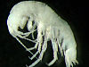

stygobromus

Definition: Stygobromus is a genus of amphipod crustaceans that live in subterranean habitats. The majority of the listed species are endemic to North America (one from Canada, the rest from the United States), a smaller number of species are also known from Eurasia. Most of the North American species live in areas which were not covered by the Laurentide Ice Sheet, although a few species seem to have survived under the ice. A number of species are on the IUCN Red List as endangered species (EN) or vulnerable species (VU); one species, S. lucifugus, is extinct.
Source: Wikipedia
Wikipedia Page (Something wrong with this association? Let us know.)
Wikidata Page (Something wrong with this association? Let us know.)